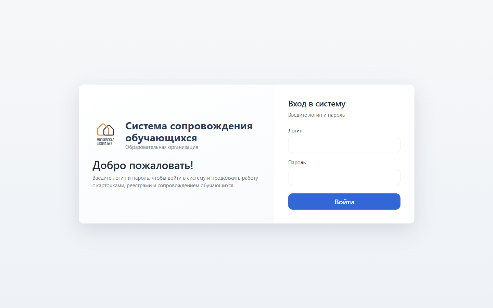
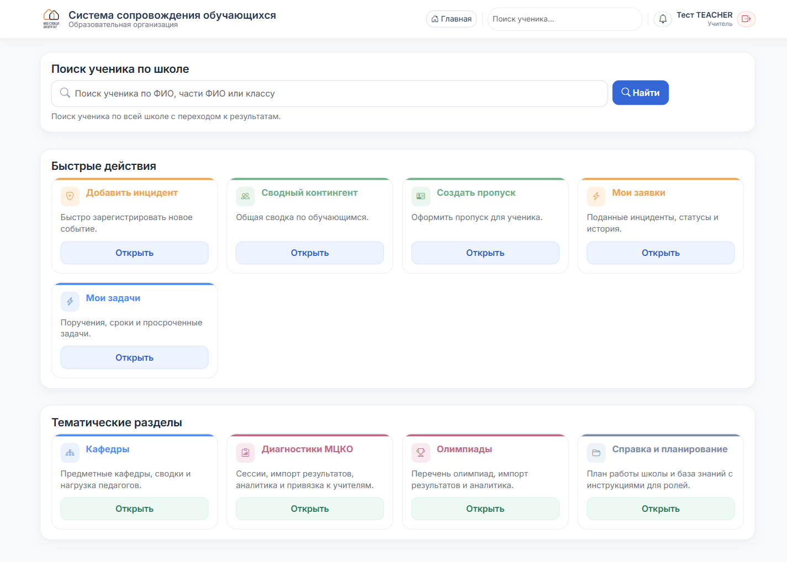

Учитель
С чего начать
Что это за система, как войти и что вы увидите на главной.
1
Войдите в систему
Откройте в браузере http://10.174.241.7/. Введите логин и пароль, которые выдал администратор, и нажмите «Войти».

2
Главная страница
Вы попадаете на главную. В правом верхнем углу — ваше имя и роль «Учитель».

Три основных блока:
- Поиск ученика — сверху, позволяет найти ребёнка по ФИО или классу.
- Быстрые действия — ключевые кнопки: «Добавить инцидент», «Мои заявки», «Мои задачи», «Сводный контингент», «Создать пропуск».
- Тематические разделы — кафедры, МЦКО, олимпиады, справка.
3
Что вам доступно
Как учителю вам доступно:
- Подавать инциденты по ученикам школы.
- Отслеживать свои заявки (статус, история).
- Выписывать пропуска.
- Смотреть списки классов, кафедр, МЦКО, олимпиад.
Карточки учеников и соц. паспорт класса доступны только классным руководителям. Если вам нужны эти данные — обратитесь к классруку или администратору.
4
Как выйти
Нажмите значок выхода в правом верхнем углу (рядом с вашим именем). Закрывать окно браузера без выхода — не рекомендуется.